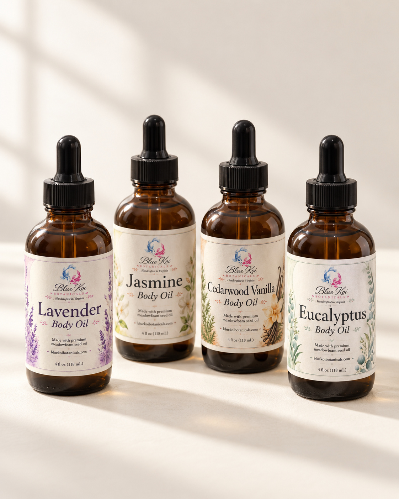

Charlottesville, Virginia · Small-batch body care
A little care,
just for you.
Soft skin. Scents you look forward to. Small moments that feel like yours. Discover our CBD salves and roll-on, body oils, mists, balms, and whipped butters, made by hand in Virginia. Shop online or find our table at a Charlottesville market.
Woman-owned · Made in small batches

From Virginia, with care
CBD salves & roll-on.
Find your everyday format.
Choose a 2 oz CBD salve with 1,000 mg CBD, a 4 oz salve with 2,000 mg CBD, or a 10 mL CBD Roll-On with 1,000 mg CBD. Read the ingredients, compare textures, and find us at a scheduled Charlottesville market.

Meet your new everyday companion
A little care.
Ready to roll.
Cooling menthol. Silky oils. A fresh hint of eucalyptus and lavender. Our new CBD Roll-On puts your favorite small moment of care in a bottle that goes where you do.
1,000 mg CBD · 10 mL · $26
Meet the CBD Roll-OnJasmine & ylang ylang
Oil or butter?
A few drops of oil on damp skin, or a small scoop of butter for the dry spots. The same floral scent, in two different textures.

Jasmine Body Oil
$18Soft skin with a little floral luxury. Jasmine and ylang ylang lend a lush, rounded scent to our silky blend of meadowfoam and jojoba oils, leaving skin with a delicate sheen.
Meet the oil
Jasmine Whipped Body Butter
$28Rich moisture with a lush floral finish. Shea and cocoa butters are whipped with meadowfoam and jojoba oils, then scented with jasmine and ylang ylang for an everyday ritual that feels wonderfully indulgent.
Meet the butter
A small Virginia business
Come say hello.
There’s something nice about trying a scent in person and talking to the person who made it. We bring Blue Koi to markets around Charlottesville.
All times are local to Charlottesville (Eastern Time).
| Sun | Mon | Tue | Wed | Thu | Fri | Sat |
|---|---|---|---|---|---|---|
| Farmers Market at IX Art Park, 09:00–13:00 | ||||||
| Farmers Market at IX Art Park, 09:00–13:00 | ||||||
| Farmers Market at IX Art Park, 09:00–13:00 |
IXHolidayAway
October visits
- Farmers Market at IX Art Park09:00–13:00
- Farmers Market at IX Art Park09:00–13:00
- Farmers Market at IX Art Park09:00–13:00
| Sun | Mon | Tue | Wed | Thu | Fri | Sat |
|---|---|---|---|---|---|---|
| Not attending | ||||||
| Not attending | ||||||
| Farmers Market at IX Art Park, 09:00–13:00 | ||||||
| Charlottesville Holiday Market, 09:00–13:00 | ||||||
IXHolidayAway
November visits
- Not attending the marketWe’ll be back November 21.
- Not attending the marketWe’ll be back November 21.
- Farmers Market at IX Art Park09:00–13:00
- Charlottesville Holiday Market09:00–13:00
| Sun | Mon | Tue | Wed | Thu | Fri | Sat |
|---|---|---|---|---|---|---|
| Charlottesville Holiday Market, 09:00–13:00 | ||||||
| Charlottesville Holiday Market, 09:00–13:00 | ||||||
| Charlottesville Holiday Market, 09:00–13:00 | ||||||
IXHolidayAway
December visits
- Charlottesville Holiday Market09:00–13:00
- Charlottesville Holiday Market09:00–13:00
- Charlottesville Holiday Market09:00–13:00
We won’t be at the market November 7 or 14. Our last scheduled market of 2026 is December 19.